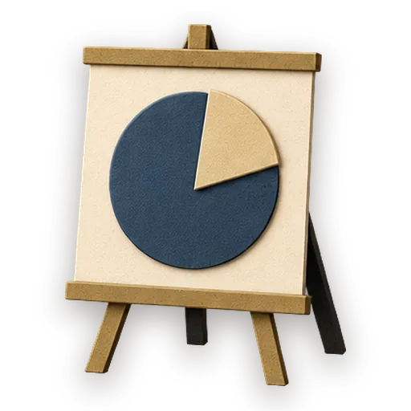

Slide Deck from Content

Run this in GezelNothing opened? Opening from this site needs the latest Gezel. Get Gezel
Turn a body of source content into a presentation deck. Outlines the narrative first, designs a consistent slide look, then builds the deck (HTML slides), evaluating for narrative flow and visual consistency.
How it runs
| # | Step | Who runs it | What happens |
|---|---|---|---|
| 1 | Outline the deck | Planner | narrative arc + per-slide bullets from the source |
| 2 | Slide design | Designer | a consistent slide template + palette |
| 3 | Build the deck | Developer | generate the slides to the template |
| 4 | Evaluate | Reviewer | Grade the deliverable against every acceptance criterion. All pass → finish; any fail → loop back and fix the gap. |
| 5 | Finish | Developer | All acceptance criteria met. Stamp a short summary and report DONE. |
Say something like "slide deck" or "powerpoint" or "presentation" or "build a deck" in chat to start it.